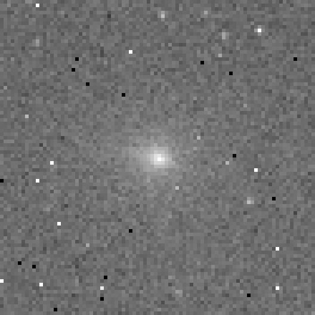

NASA feed sample
5 NEOsFeed date: November 14, 2026 UTC
A public place to inspect astronomical observations and explore how a historical asteroid archive works.
Feed date: November 14, 2026 UTC
Classification alone is not impact probability
Original images with dates and source files
Explore 3I/ATLAS in infrared, with original FITS files and the metadata needed to revisit the record.
Open observations ↗
The deployed NeoWs backend retains collected responses, dated asteroid snapshots, summary inputs, model versions, and human review decisions. This dashboard demonstrates those records with one archived example.
Explore the sample record →These describe completed project tests, not current live service health.
A two-epoch case study of interstellar comet 3I/ATLAS. This is separate from the NeoWs asteroid sample.
QR2 is a legacy release superseded by DR1/QR3. Images share an asinh grayscale display scale. They have not been WCS-reprojected, matched at local wavelength, background-subtracted, or science-quality masked. A common display scale does not make a quantitative comparison valid. Bright pixels may be stars, noise, artifacts, or comet emission. No automated object identification runs here.
Metadata, display transform, and checksums · Official 259-row observation table · IRSA source guidance ↗
An archived example of the records preserved by the working NeoWs backend.
| Asteroid | Estimated diameter | Approach date | NASA PHA flag |
|---|---|---|---|
| 218017 2001 XV266 | ≈ 289–646 m | November 14, 2026 03:38 UTC | False |
No matching sample record. This demo contains one asteroid.
Rounded values from the participant-reviewed snapshot example. Approach time and retrieval time describe different events.
A catalogue can change as its underlying observations improve. Preserving each retrieval makes it possible to inspect earlier published estimates and reproduce what a summary used.
No numerical revision or trajectory change is demonstrated by this single sample. Comparing successive matching events remains future work.
NASA API source ↗A summary is an interpretation. Its source record remains the evidence.
“PHA classification alone does not establish impact probability.”
The corrected summary reports the source flag without equating it with an absence of impact risk. The participant compared the revised facts against the linked NASA snapshot.
The backend retains source inputs, model and prompt versions, usage information, and review decisions. A processing job marked completed means the summary was saved; human approval is a separate step.
Scheduled queue jobs successfully processed snapshots 9 and 6 on November 15. The worker starts at most five queued jobs per UTC day and does not automatically retry failed jobs.
The five-job cap applies to the queue worker, not separate manual API calls.